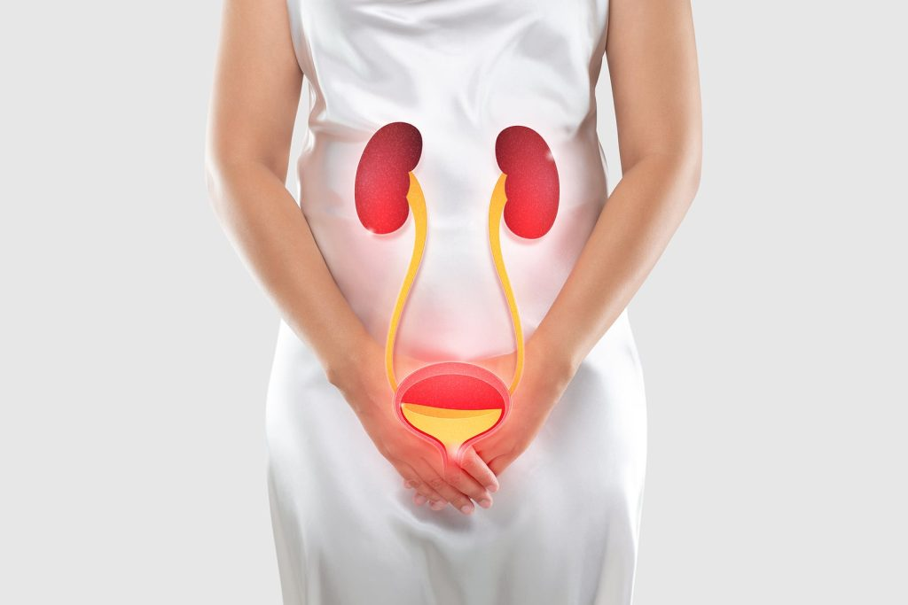

Gyakori állapot, amelyben az érintett nehezen alszik el, gyakran felébred éjszaka, vagy túl korán felkel, és nem tud visszaaludni.
Gyógynövényei:
A vérnyomás tartósan a normálisnál alacsonyabb. Tünetei közé tartozik a szédülés, ájulás.
Gyógynövényei:
Az aranyér a végbél és a végbélnyílás vénás hálózatának kitágulása, gyulladása vagy csomósodása. Lehet belső (végbél belső falán) vagy külső (végbélnyílás körül).
Gyógynövényei:
Az (arc-)üregek nyálkahártyájának gyulladása, leggyakrabban vírusos vagy bakteriális fertőzés miatt. Tünetei közé tartozik az arcfájdalom vagy nyomásérzés (homlok, orcák, szem környéke), orrfolyás, fejfájás.
Gyógynövényei:
A bőr hirtelen jelentkező, viszkető, piros vagy hólyagos kiütése, amely általában allergiás reakció, gyógyszer, élelmiszer vagy fizikai inger hatására alakul ki.
Gyógynövényei:
Csontból kiemelkedő, jóindulatú növedék, amely gyakran a csont felszínén alakul ki, és lehet veleszületett vagy szerzett (pl. túlterhelés, sérülés következtében).
Gyógynövényei:
Drogja a virágzó, föld feletti hajtása.
Az epeutak területén jelentkező hirtelen, görcsös jellegű fájdalom, gyakran étkezés után, különösen zsíros ételek fogyasztásakor.
Gyógynövényei:
Erős, gyakran féloldali fejfájás, amelyhez hányinger, hányás, fény- és hangérzékenység társulhat.
Gyógynövényei:
Vírusos légúti fertőzés, amely hirtelen kezdődő lázzal, izomfájdalmakkal és erős fáradtsággal jár.
Gyógynövényei:
légutak reflexszerű reakciója, melynek célja a nyálka, irritáló anyagok vagy idegen testek eltávolítása a légutakból. Lehet száraz (ingergörcs) vagy produktív (váladékos).
Gyógynövényei:
Az étvágytalanság egy olyan tünet, amely során az egyén elveszíti az érdeklődését az étel iránt, és csökken, vagy teljesen megszűnik az evés iránti igénye.
Gyógynövényei:

A húgyúti fertőzés a húgyutak (húgycső, húgyhólyag, ritkábban vesemedence) baktériumok okozta gyulladása, amely gyakori, fájdalmas, csípő vizeléssel jár.
Gyógynövényei: